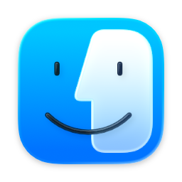
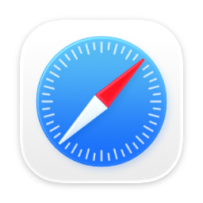
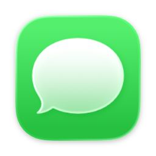
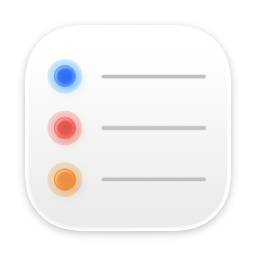
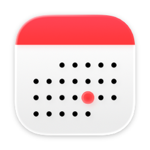
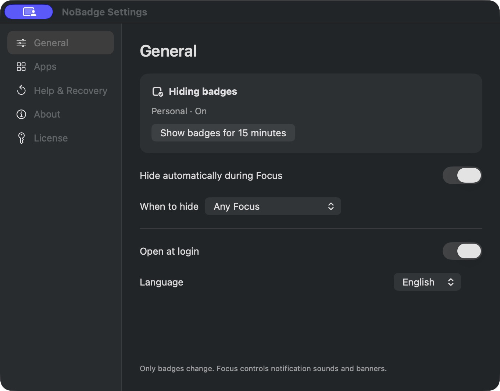
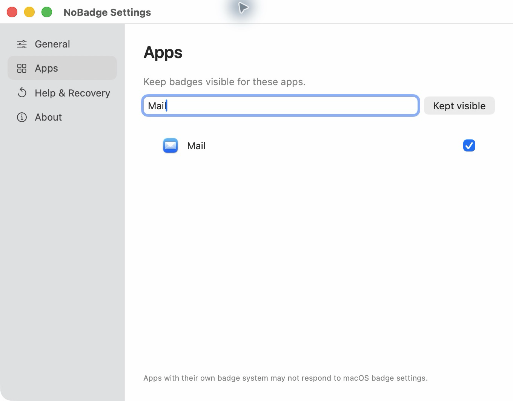

Allow access
Activate with your purchase key, then follow the Full Disk Access setup guide.
A little less distraction
Hide supported badges in your Dock and ⌘Tab while you focus. Your apps stay right where they are. Your previous badge settings return when you’re done.
One-time purchase · No subscription
Requires Apple Silicon · macOS 26.5.1+ within macOS 26, or macOS 27
Full Disk Access required · Check compatibility


24
3
5
Set it once. Settle in.
Activate with your purchase key, then follow the Full Disk Access setup guide.
Follow any Focus, or pick the modes where you want supported badges hidden.
NoBadge restores your previous badge settings when Focus ends. Your apps stay available throughout.
See what changes
Same familiar apps. No red dots pulling you away.
Illustrative Dock and ⌘Tab previews using Apple’s app icons and example counts. NoBadge manages supported macOS badge settings. Apps that draw their own badges may not respond.
A small app, within reach
A quick check from the menu bar. A few clear settings. Then back to your work.
Check your status, show badges for 15 minutes, or open Settings without digging around.


Keep what matters
Search for an app and check it to keep its badges visible. Everything else stays quieter during Focus.
Actual NoBadge app screen. Some apps draw their own badges and may not respond to macOS badge settings.
$2.99 USD · one time
One purchase · Up to 3 Macs. Activate with the key in your receipt.
Buy NoBadge — $2.99Taxes and currency conversion are shown at checkout.
14-day refund requests · Downloads & updates
Good to know
It turns off the macOS badge setting for supported apps during Focus, then restores the settings it changed. It does not mark messages as read or clear your inbox.
No. NoBadge manages badge settings. macOS Focus and each app still control notification sounds, banners, and delivery.
Yes. Open Apps, search for an app, and select it to keep its badges visible.
NoBadge is sold directly through Lemon Squeezy as a signed and notarized Mac download. It is not available on the Mac App Store.
Focus and badge processing stays on your Mac. NoBadge has no analytics or advertising. License checks use Lemon Squeezy; update checks and downloads use our website. No Focus names, app list, or messages are sent. Diagnostics are exported only when you choose. See our privacy policy.